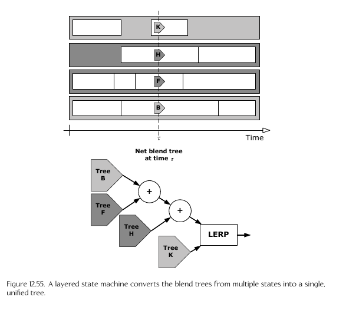

- 
Naughty dog engine uses Scheme script to define state machines
(define-state complex
:name "move-b-to-f"
:tree
(anim-node-lerp
(anim-node-additive
(anim-node-additive
(anim-node-clip "move-f")
(anim-node-clip "move-f-look-lr")
(anim-node-clip "move-f-look-ud")
)
(anim-node-additive
(anim-node-additive
(anim-node-clip "move-b")
(anim-node-clip "move-b-look-lr")
)
(anim-node-clip "move-b-look-ud")
)
)